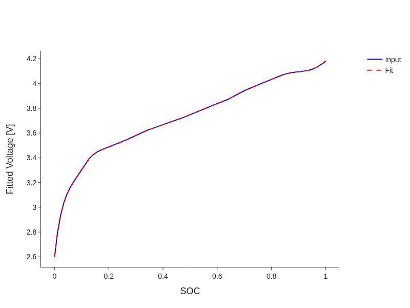
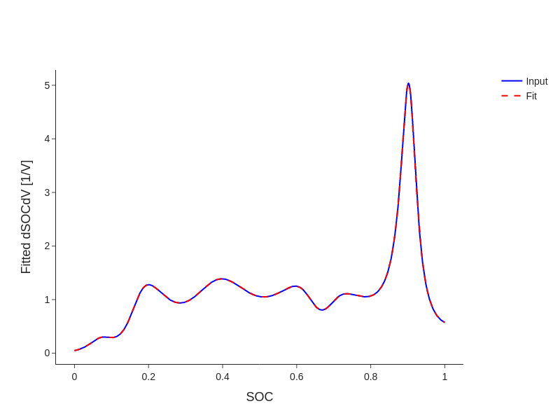

OCV Fitting#
Open-circuit voltage fitting is the key step for conducting Degradation Mode Analysis (DMA). PyProBE has a number of built-in methods for this.
[1]:
import pyprobe
import polars as pl
from pyprobe.analysis import degradation_mode_analysis
import numpy as np
import matplotlib.pyplot as plt
In this example, we are going to generate a synthetic aged OCV curve. We will use the half cell OCV fits from Chen 2020:
[2]:
def graphite_LGM50_ocp_Chen2020(sto):
"""Chen2020 graphite ocp fit."""
u_eq = (
1.9793 * np.exp(-39.3631 * sto)
+ 0.2482
- 0.0909 * np.tanh(29.8538 * (sto - 0.1234))
- 0.04478 * np.tanh(14.9159 * (sto - 0.2769))
- 0.0205 * np.tanh(30.4444 * (sto - 0.6103))
)
return u_eq
def nmc_LGM50_ocp_Chen2020(sto):
"""Chen2020 nmc ocp fit."""
u_eq = (
-0.8090 * sto
+ 4.4875
- 0.0428 * np.tanh(18.5138 * (sto - 0.5542))
- 17.7326 * np.tanh(15.7890 * (sto - 0.3117))
+ 17.5842 * np.tanh(15.9308 * (sto - 0.3120))
)
return u_eq
z = np.linspace(0, 1, 1000) # stoichiometry vector
# generate complete ocp curves
ocp_pe = nmc_LGM50_ocp_Chen2020(z)
ocp_ne = graphite_LGM50_ocp_Chen2020(z)
We will now define a set of stoichiometry limits to generate our synthetic OCV curve:
[3]:
n_pts = 1000
# positive electrode
x_pe_lo = 0.85 # stoichiometry at low cell SOC
x_pe_hi = 0.27 # stoichiometry at high cell SOC
x_pe = np.linspace(x_pe_lo, x_pe_hi, n_pts) # stoichiometry range
# negative electrode
x_ne_lo = 0.03 # stoichiometry at low cell SOC
x_ne_hi = 0.9 # stoichiometry at high cell SOC
x_ne = np.linspace(x_ne_lo, x_ne_hi, n_pts) # stoichiometry range
# full cell voltage and capacity
voltage = nmc_LGM50_ocp_Chen2020(x_pe) - graphite_LGM50_ocp_Chen2020(x_ne)
capacity = np.linspace(0, 5, n_pts) # capacity range in Ah
plt.figure()
plt.plot(capacity, voltage)
plt.xlabel('Capacity (Ah)')
plt.ylabel('Voltage (V)')
[3]:
Text(0, 0.5, 'Voltage (V)')
We will now generate a fit to this voltage curve using the Simple OCV fit method in PyProBE:
[4]:
# put the voltage and capacity data into a Result object (not necessary in normal use)
OCV_result = pyprobe.Result(base_dataframe=pl.DataFrame({'Capacity [Ah]': capacity, 'Voltage [V]': voltage}), info= {})
dma_object = degradation_mode_analysis.DMA(input_data=OCV_result)
One of the available analysis methods is fit_ocv(). This produces two result objects:
[5]:
stoichiometry_limits, fitted_curve = dma_object.fit_ocv(x_ne = z,
x_pe = z,
ocp_ne = ocp_ne,
ocp_pe = ocp_pe,
x_guess = [0.9, 0.1, 0.1, 0.9])
print(stoichiometry_limits.data)
shape: (1, 8)
┌────────────┬────────────┬────────────┬───────────┬───────────┬───────────┬───────────┬───────────┐
│ x_pe low ┆ x_pe high ┆ x_ne low ┆ x_ne high ┆ Cell ┆ Cathode ┆ Anode ┆ Li │
│ SOC ┆ SOC ┆ SOC ┆ SOC ┆ Capacity ┆ Capacity ┆ Capacity ┆ Inventory │
│ --- ┆ --- ┆ --- ┆ --- ┆ [Ah] ┆ [Ah] ┆ [Ah] ┆ [Ah] │
│ f64 ┆ f64 ┆ f64 ┆ f64 ┆ --- ┆ --- ┆ --- ┆ --- │
│ ┆ ┆ ┆ ┆ f64 ┆ f64 ┆ f64 ┆ f64 │
╞════════════╪════════════╪════════════╪═══════════╪═══════════╪═══════════╪═══════════╪═══════════╡
│ 0.85 ┆ 0.270001 ┆ 0.030003 ┆ 0.899992 ┆ 5.0 ┆ 8.620704 ┆ 5.7472 ┆ 7.50003 │
└────────────┴────────────┴────────────┴───────────┴───────────┴───────────┴───────────┴───────────┘
And the second is a result object containing the fitted OCP curve:
[6]:
fig = pyprobe.Plot()
fig.add_line(fitted_curve, x='SOC', y='Input Voltage [V]',label = "Input")
fig.add_line(fitted_curve, x='SOC', y='Fitted Voltage [V]', color='red', label = 'Fit', dash='dash')
fig.show_image()
# fig.show() # This will show the plot interactively, it is commented out for the sake of the documentation

You can also fit to differentiated voltage data:
[7]:
stoichiometry_limits, fitted_curve = dma_object.fit_ocv(x_ne = z,
x_pe = z,
ocp_ne = ocp_ne,
ocp_pe = ocp_pe,
x_guess = [0.9, 0.1, 0.1, 0.9],
fitting_target = 'dQdV')
print(stoichiometry_limits.data)
fig = pyprobe.Plot()
fig.add_line(fitted_curve, x='SOC', y='Input dSOCdV [1/V]',label = "Input")
fig.add_line(fitted_curve, x='SOC', y='Fitted dSOCdV [1/V]', color='red', label = 'Fit', dash='dash')
fig.show_image()
# fig.show() # This will show the plot interactively, it is commented out for the sake of the documentation
shape: (1, 8)
┌────────────┬────────────┬────────────┬───────────┬───────────┬───────────┬───────────┬───────────┐
│ x_pe low ┆ x_pe high ┆ x_ne low ┆ x_ne high ┆ Cell ┆ Cathode ┆ Anode ┆ Li │
│ SOC ┆ SOC ┆ SOC ┆ SOC ┆ Capacity ┆ Capacity ┆ Capacity ┆ Inventory │
│ --- ┆ --- ┆ --- ┆ --- ┆ [Ah] ┆ [Ah] ┆ [Ah] ┆ [Ah] │
│ f64 ┆ f64 ┆ f64 ┆ f64 ┆ --- ┆ --- ┆ --- ┆ --- │
│ ┆ ┆ ┆ ┆ f64 ┆ f64 ┆ f64 ┆ f64 │
╞════════════╪════════════╪════════════╪═══════════╪═══════════╪═══════════╪═══════════╪═══════════╡
│ 0.849927 ┆ 0.27001 ┆ 0.030002 ┆ 0.900013 ┆ 5.0 ┆ 8.621925 ┆ 5.747055 ┆ 7.500426 │
└────────────┴────────────┴────────────┴───────────┴───────────┴───────────┴───────────┴───────────┘
